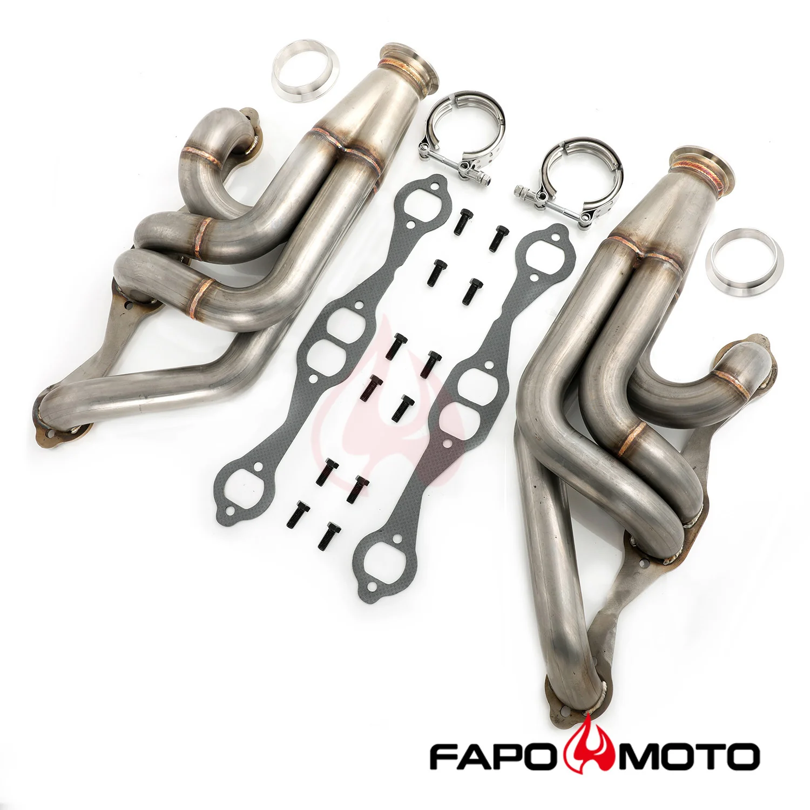

1 / 9FAPO turbosprężarka kolektors Do Chevy Chevelle Malibu El Camino A-body Small Block V8 El Camino Impala Bel Air Camaro Nova FE640150
Aplikacja Kompatybilny z podwoziem A-Body z turbokonwertowanymi silnikami SBC 265, 283, 302, 305, 307, 327, 350, 400 small block Chevy V8 Chevelle, Malibu, El Camino, Impala, Bel Air, Camaro, Nova, Monte Carlo NIE bezpośrednie dopasowanie. Tylko do konwersji turbo Może być stosowany w konstrukcjach z pojedynczą lub podwójną turbosprężarką Do góry i do przodu Nie pasuje do Camaro trzeciej generacji 1982+ Cechy Doskon…
Application Compatible with A-Body Chassis with turbo converted SBC 265, 283, 302, 305, 307, 327, 350, 400 small block Chevy V8 engines Chevelle, Malibu, El Camino, Impala, Bel Air, Camaro, Nova, Monte Carlo NOT direct fit. For turbo conversion only Can be used for single or twin turbo builds Up and forward facing Does not fit 1982+ third gen Camaro Features Excellent quality and durability to improve vehicle performance Shorty design for power gain from idle to mid-range RPM Fully mandrel bent tubes made of high quality 16-gauge 304 stainless steel Head flanges laser-cut from high quality 3/8-inch thick steel plates The flange is flattened by a hydraulic press for precise and leak free sealing All joints are golden color TIG brass style welded to prevent cracking and wear Flanges chrome plated for corrosion resistance Mandrel bent pipes to maintain free flow The accessories in the photos are included 1 year warranty for any manufacturing defect Technical Specifications Header Type: Turbo Primary Diameter: 1-3/4 in. (45mm) Collector Diameter: 2-1/2 in. (64mm) Head Flange Thickness: 3/8 in. (9.5mm) Pipe Thickness: 16 gauge (1.5mm) Material: 304 Stainless Steel Finish: Natural
1799,99 PLN
Opis produktu
Aplikacja
- Kompatybilny z podwoziem A-Body z turbokonwertowanymi silnikami SBC 265, 283, 302, 305, 307, 327, 350, 400 small block Chevy V8
- Chevelle, Malibu, El Camino, Impala, Bel Air, Camaro, Nova, Monte Carlo
- NIE bezpośrednie dopasowanie. Tylko do konwersji turbo
- Może być stosowany w konstrukcjach z pojedynczą lub podwójną turbosprężarką
- Do góry i do przodu
- Nie pasuje do Camaro trzeciej generacji 1982+
Cechy
- Doskonała jakość i trwałość poprawiająca osiągi pojazdu
- Krótka konstrukcja zapewniająca wzrost mocy od obrotów biegu jałowego do średnich obrotów
- Rury w pełni gięte trzpieniowo, wykonane z wysokiej jakości stali nierdzewnej 304 o średnicy 16 mm
- Kołnierze głowicy wycinane laserowo z wysokiej jakości blach stalowych o grubości 3/8 cala
- Kołnierz jest spłaszczany za pomocą prasy hydraulicznej, co zapewnia precyzyjne i szczelne uszczelnienie
- Wszystkie połączenia są spawane metodą TIG w kolorze złotym, aby zapobiec pękaniu i zużyciu
- Kołnierze chromowane, co zapewnia odporność na korozję
- Rury wygięte trzpieniem w celu utrzymania swobodnego przepływu
- Akcesoria widoczne na zdjęciach są wliczone w cenę
- 1 rok gwarancji na wszelkie wady produkcyjne
Dane techniczne
- Typ nagłówka:Turbo
- Podstawowa średnica:1-3/4 cala (45 mm)
- Średnica kolektora:2-1/2 cala (64 mm)
- Grubość kołnierza głowicy:3/8 cala (9,5 mm)
- Grubość rury:Średnica 16 (1,5 mm)
- Tworzywo:Stal nierdzewna 304
- Skończyć:Naturalny
Application
- Compatible with A-Body Chassis with turbo converted SBC 265, 283, 302, 305, 307, 327, 350, 400 small block Chevy V8 engines
- Chevelle, Malibu, El Camino, Impala, Bel Air, Camaro, Nova, Monte Carlo
- NOT direct fit. For turbo conversion only
- Can be used for single or twin turbo builds
- Up and forward facing
- Does not fit 1982+ third gen Camaro
Features
- Excellent quality and durability to improve vehicle performance
- Shorty design for power gain from idle to mid-range RPM
- Fully mandrel bent tubes made of high quality 16-gauge 304 stainless steel
- Head flanges laser-cut from high quality 3/8-inch thick steel plates
- The flange is flattened by a hydraulic press for precise and leak free sealing
- All joints are golden color TIG brass style welded to prevent cracking and wear
- Flanges chrome plated for corrosion resistance
- Mandrel bent pipes to maintain free flow
- The accessories in the photos are included
- 1 year warranty for any manufacturing defect
Technical Specifications
- Header Type: Turbo
- Primary Diameter: 1-3/4 in. (45mm)
- Collector Diameter: 2-1/2 in. (64mm)
- Head Flange Thickness: 3/8 in. (9.5mm)
- Pipe Thickness: 16 gauge (1.5mm)
- Material: 304 Stainless Steel
- Finish: Natural
FAPO Polska
Ten produkt obsługujemy lokalnie
Autoryzowana obsługa
FAPO Polska prowadzi katalog, kontakt i zamówienia bez odsyłania klienta do zewnętrznych sklepów.
Dobór po aucie
Sprawdzamy dopasowanie produktu do pojazdu, rocznika i wersji przed finalizacją zamówienia.
Wsparcie po zakupie
Masz kontakt w Polsce w sprawach zamówień, wysyłki, gwarancji i zwrotów.